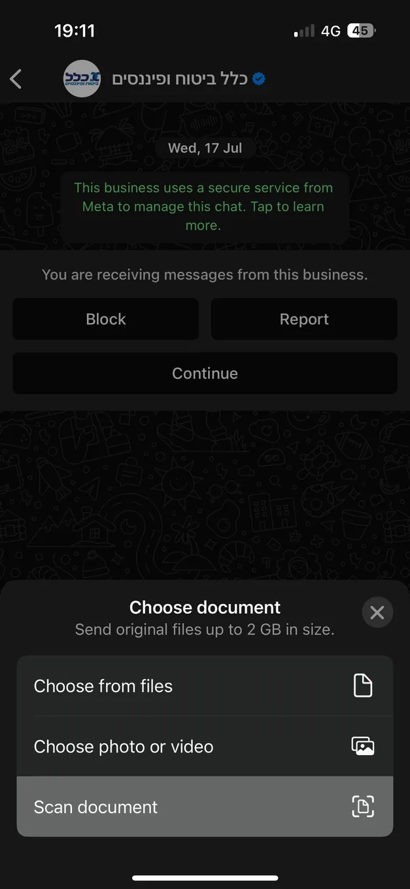

WhatsApp adds built-in document scanning
Originally posted on LinkedIn, December 30, 2024.
Goodbye, CamScanner. WhatsApp now lets you scan documents directly inside the app.
Choose Add Document, select Scan, and photograph the page. WhatsApp automatically detects it, straightens and sharpens the image, then saves it as an image or PDF file that you can share immediately in the conversation.
WhatsApp does not release new features often and remains far behind competing apps such as Telegram and the Chinese wechat. This time, though, it delivered a useful feature that could largely wipe out the market for third-party scanning apps, along with their annoying ads or subscription fees.
